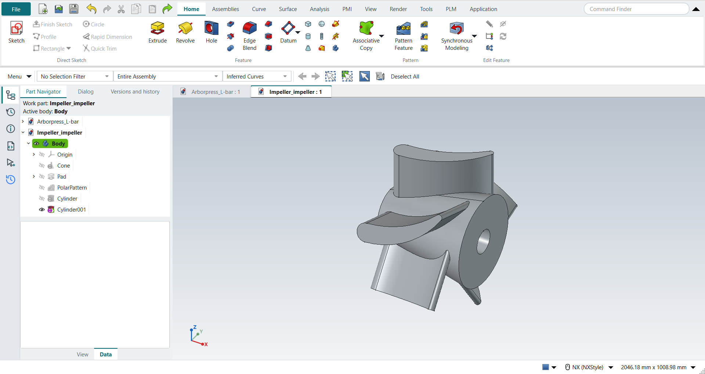

Tutorial AU: Impeller, the solid
| Source |
Ming C. Leu, Wenjin Tao, Amir Ghazanfari and Krishna Kolan, NX 12 for Engineering Design (Missouri University of Science and Technology), section 4.7.5 (Impeller). It continues the blade sketch of section 3.5.3, tutorial AH. |
| You learn |
Cone with a typed point and a vector, Extrude with Unite, Pattern Feature with a circular layout, Cylinder with Subtract |
| Sizes |
the book’s, in inches, typed in millimetres. A cone along −XC from (14, 0, 0), Ø15 to Ø8, 16.25 long. The blade extruded 12 along ZC. Five blades, 72° apart about XC. A hole Ø4 × 16 into the large end and Ø0.275 × 0.25 into the small end. |
The replay runs tutorial AH first and opens the part it saved.
Step by step
1. The cone
Open Impeller_impeller, the part of tutorial AH.
Click Cone, keep Diameters and Height and choose −XC.
Type the point (355.6, 0, 0) mm, which is (14, 0, 0) in.
Then type Base Diameter 381, Top Diameter 203.2 and Height 412.75 mm (15, 8 and 16.25 in).
Click OK.
2. The blade
Click Extrude and click one of the blade’s arcs: with the Curve Rule on Inferred Curves the pick takes the whole closed outline. Choose Unite, type 304.8 mm (12 in) and click OK.
3. Five blades
Select the Extrude and click Circular Pattern (Home › Pattern). Choose the X axis, 5 occurrences over 360° (72° apart), and press MB2.
4. The holes
Click Cylinder, choose −XC, type the point (14, 0, 0) in, and type Diameter 4 and Height 16. Choose Subtract, and click OK. Click Cylinder again, choose XC, type the point (−2.25, 0, 0) in at the small end, and type Diameter 0.275 and Height 0.25. Choose Subtract, and click OK.

Save the part.
The replay
| # | In the book (NX) | In FreeCAD NX-Style | Result | Notes |
|---|---|---|---|---|
AU1 |
Open Impeller_impeller (tutorial AH’s part) |
File > Open (by script) |
same |
the blade sketch, 4 curves in a closed loop |
AU2 |
Cone: Diameters and Height, -XC, Point Dialog (14, 0, 0), Base 15, Top 8, Height 16.25, OK |
ribbon 'Home › Feature', Type 'Diameters and Height', Specify Vector '-XC', XC/YC/ZC 355.6/0/0 typed, Base 381, Top 203.2, Height 412.75 typed, Boolean 'None', OK |
same |
same solid as the reference: 0 mm³ differ, box within 5.7e-14 mm, 3 faces (3 in the reference); origin (355.6, 0.0, 0.0); one undo step ['Cone'] |
AU3 |
Extrude the airfoil 12 along ZC, Boolean Unite with the cone |
ribbon 'Home › Feature > Extrude', a side picked (QuickPick; Curve Rule Inferred Curves), dialog opened True; Boolean 'Unite', 'lengthEdit' = 304.8 mm; OK clicked |
same |
same solid as the reference: 0 mm³ differ, box within 1.8e-13 mm, 8 faces (8 in the reference) |
AU4 |
Pattern Feature: the blade, Circular, XC through the origin, Count 5, Pitch Angle 72, OK |
the Extrude selected + ribbon 'Home › Pattern > Circular Pattern', axis 'Base X-axis', 'spinOccurrences' = 5 over 360° (72° apart), MB2 = OK |
same |
same solid as the reference: 0 mm³ differ, box within 1.8e-13 mm, 28 faces (28 in the reference) |
AU5 |
Cylinder Ø4 x 16 into the cone’s large end, Subtract |
ribbon 'Home › Feature', Type 'Axis, Diameter, and Height', Specify Vector '-XC', XC/YC/ZC 355.6/0/0 typed, Diameter 101.6 and Height 406.4 typed, Boolean 'Subtract', OK |
same |
same solid as the reference: 0 mm³ differ, box within 2.9e-13 mm, 30 faces (30 in the reference); origin (355.6, 0.0, 0.0); one undo step ['Cylinder']; with Body |
AU6 |
Cylinder Ø0.275 x 0.25 into the cone’s small end, Subtract |
ribbon 'Home › Feature', Type 'Axis, Diameter, and Height', Specify Vector 'XC', XC/YC/ZC -57.15/0/0 typed, Diameter 6.985 and Height 6.35 typed, Boolean 'Subtract', OK |
same |
same solid as the reference: 0 mm³ differ, box within 3.4e-13 mm, 31 faces (31 in the reference); origin (-57.15, 0.0, 0.0); one undo step ['Cylinder']; with Body |
AU7 |
The impeller |
compared with the book’s dimensions built by the Part API |
same |
same solid as the reference: 0 mm³ differ, box within 3.4e-13 mm, 31 faces (31 in the reference) |
AU8 |
Save and close the part |
file name given once by script (the system file dialog is not driven); a change, then the Ctrl+S key |
same |
Impeller_impeller.FCStd rewritten by Ctrl+S: the file holds the change and the part is unmodified afterwards (modified before the key: True); FreeCAD format, not .prt |
| Result | Means |
|---|---|
same |
The book’s NX steps work as written. |
differs |
It works, but the FreeCAD way is different; the notes say how. |
limit |
The book’s way fails in FreeCAD itself; a workaround follows in the next steps. |
missing |
FreeCAD has no such function; a stand-in follows. |
skipped |
Not replayed; the notes give the reason. |
FAILED |
Did not work. |
Each step is compared with the book’s dimensions built by FreeCAD’s Part API.